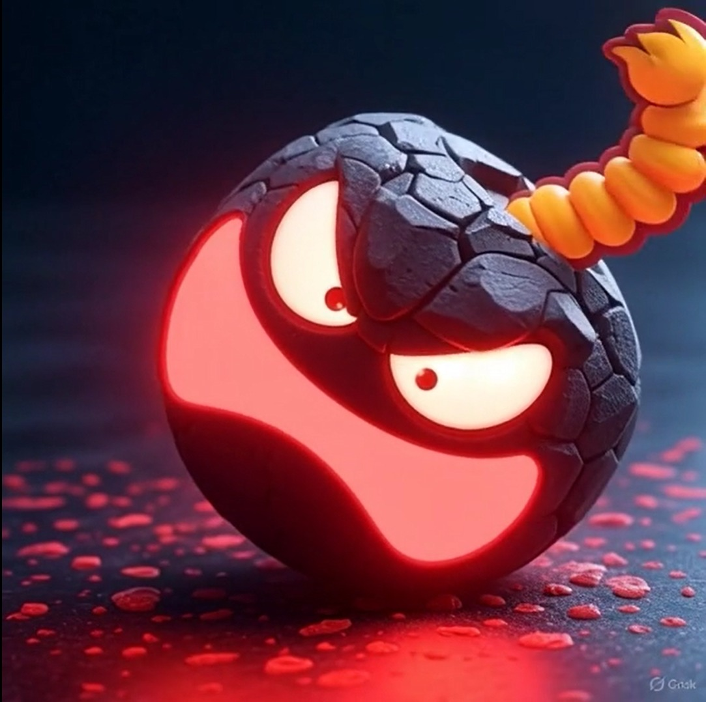

Bomb
Uma fruta bem... Explosiva
Uma fruta bem... Explosiva
Fruta do Corte, não é afetada por espadas.
Fruta Fantasma, mais utilizada pelo Brook.
Fruta de lava, com bastante poder destrutivo
Fruta do Buddha, uma fruta bem chamavativa e brilhatne.
Mochi.